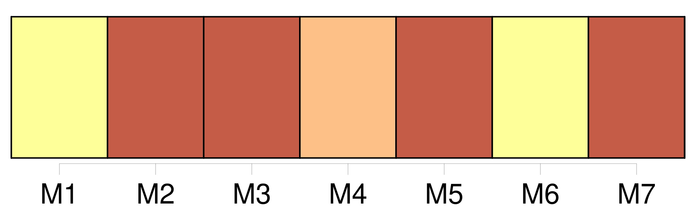
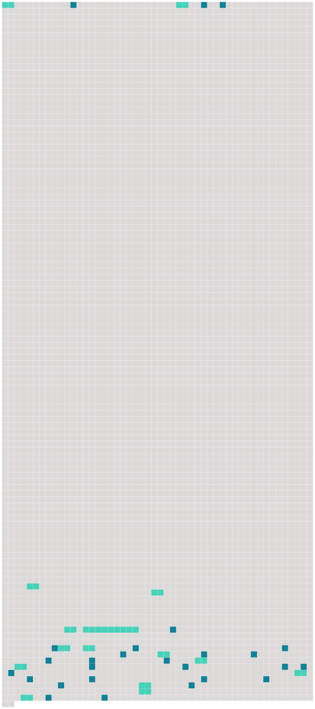

Longueur nb maillons : 41 mentions |
 |
[Le mari] pourra demander le divorce pour cause d'adultère de [sa] femme. [1 phrases]
La femme pourra demander le divorce pour cause d'adultère de [son mari] , lorsqu' [il] aura tenu [sa] concubine dans la maison commune. [186 phrases]
Quelle que soit la personne à laquelle les enfans seront confiés [les père] et mère conserveront respectivement le droit de surveiller l'entretien et l'éducation de leurs enfans et seront tenus d'y contribuer à proportion de leurs faculté. [1 phrases]
La dissolution du mariage par le divorce admis en justice ne privera les enfans nés de ce mariage, d'aucuns des avantages qui leur étaient assurés par les lois, ou par les conventions matrimoniales de [leurs père] et mère ; mais il n'y aura d'ouverture aux droits des encans que de la même manière et dans les mêmes circonstances où ils se seraient ouverts s'il n'y avait pas eu de divorce. [11 phrases]
[Le mari] restera [le maître d'arrêter l'effet de cette condamnation] , en consentant à reprendre [sa] femme. [11 phrases]
L'enfant conçu pendant le mariage, a pour [père] [le mari]
Néanmoins [celui -ci] pourra désavouer l'enfant, s' [il] prouve que, pendant le temps qui a couru depuis le trois-centième jusqu'au cent-quatre-vingtième jour avant la naissance de cet enfant, [il] était, soit par cause d'éloignement, soit par l'effet de quelque accident, dans l'impossibilité physique de cohabiter avec [sa] femme. [1 phrases]
[Le mari] ne pourra, en alléguant [son] impuissance naturelle, désavouer l'enfant : [il] ne pourra le désavouer même pour cause d'adultère, à moins que la naissance ne [lui] ait été cachée, auquel cas [il] sera admis à proposer tous les faits propres à justifier qu' [il] n'en est pas [le père] [1 phrases] L'enfant né avant le cent-quatre-vingtième jour du mariage, ne pourra être désavoué par [le mari] , dans les cas suivans : 1. ° s' [il] a eu connaissance de la grossesse avant le mariage ; 2. ° s' [il] a assisté à l'acte de naissance, et si cet acte est signé de [lui] ou contient [sa] déclaration qu' [il] ne sait signer ; 3. [4 phrases]
Dans les divers cas où [le mari] est autorisé à réclamer, [il] devra le faire, dans le mois, s' [il] se trouve sur les lieux de la naissance de l'enfant ; [1 phrases]
Si [le mari] est mort avant d'avoir fait [sa] réclamation, mais étant encore dans le délai utile pour la faire, les héritiers auront deux mois pour contester la légitimité de l'enfant, à compter de l'époque où cet enfant se serait mis en possession des biens [du mari] , ou de l'époque où les héritiers seraient troublés par l'enfant dans cette possession. [1 phrases]
Tout acte extrajudiciaire contentant le désaveu de la part [du mari] ou de [ses] héritiers, sera comme non avenu, s' [il] n'est suivi, dans le délai d'un mois, d'une action en justice, dirigée contre un tuteur ad hoc donné à l'enfant, et en présence de sa mère. |
 |
Il est possible de télécharger la ressource sur la page Ortolang |
Si vous avez des questions ou vous voyez des erreurs, merci d'envoyer un mail à silvia.federzoni89@gmail.com |